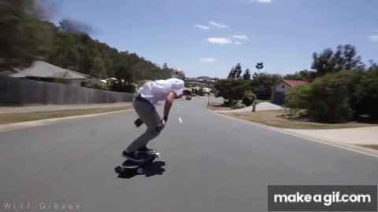
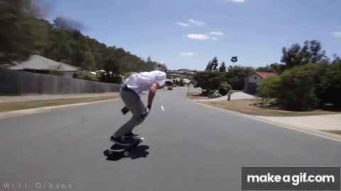

The Hippy Jump: When you jump off the board while it rolls under an obstacle
and
land back on it. Easy and classic trick for a beginner that can quickly scale up in
complexity.
How to execute:Gain some moderate speed.
Approach the obstacle, keeping your weight centered.
When close, jump vertically, letting your board roll under the obstacle.
Keep your body aligned with the board and land back on it like a smooth operator!

How to execute:
Carving: Feel the groove! A technique used to control your speed and navigate
turns. It involves
making smooth, flowing turns from side to side, shifting your weight between your toes and
heels.
How to execute:Start at a moderate speed.
Shift your weight to your heels to make a turn in one direction, then to your toes for the
opposite direction.
The deeper and more frequent your turns, the more you control your speed.
Get in the Groove! Maintain a rhythm and stay balanced while leaning into the turns.
How to execute:
Power Slide. Feel the Power! A superpower that lets you stop or slow down by
sliding the board sideways, breaking the traction of the wheels.
How to execute:Build up some speed and crouch slightly for balance.
Push your back foot outwards (for a frontside slide) or pull it inwards (for a backside
slide), while also turning your upper body in the same direction.
Shift your weight slightly to the back foot to get the wheels to slide.
Maintain balance and control as you slide, then straighten the board when you want to stop
sliding. Look ma, I'm sliding!

How to execute:
